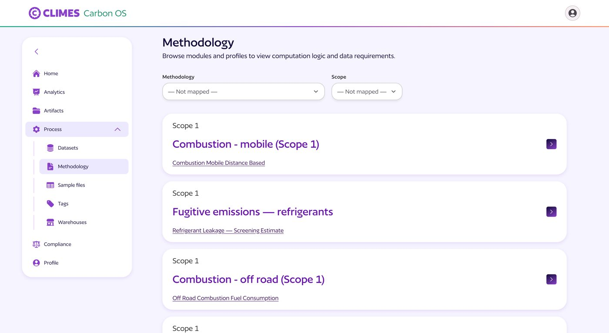
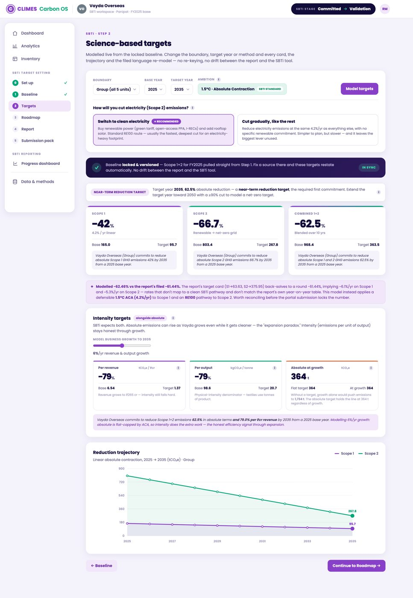

[Draft — refine in your own voice. Metrics kept qualitative.]
The problem
Corporate carbon accounting runs on spreadsheets that don't agree with each other. Emission factors get picked inconsistently, boundaries shift between reports, and when an auditor or regulator asks "where did this number come from?", there's often no clean answer. And once you're measured, the next wall is compliance — target-setting, disclosure — each with its own methodology to satisfy.
What I built
Carbon-OS is the platform that turns that mess into a system. I've shaped it end to end across several surfaces:
- GHG methodologies — Scope 1, 2 & 3 computation logic with standardised emission factors, built so every number is traceable and audit-ready.
- SBTi workflows — a guided target-setting module that models science-based targets live from a locked baseline, taking Climes into the compliance space.
- Carbon analytics — layered reads of a footprint (the pulse, leakage & cost, levers & scenarios) that tie emissions to rupees.
- …and a lot more to come — the platform keeps expanding across the measure → comply → reduce journey.


Who uses it
The approach
[The 2–3 decisions that made the difference — how you sequenced methodology vs. UI, what you insisted on for auditability, how the SBTi module reuses the baseline.]
What I'd take forward
[One honest reflection.]